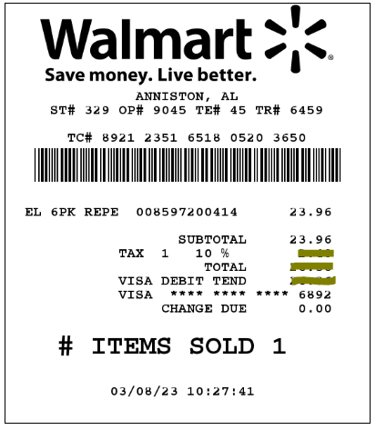
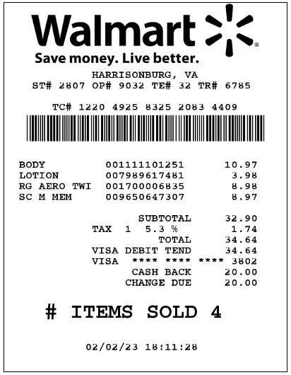

Math Presentation: 8th Grade College Visits at BRCC
Welcome to Blue Ridge Community College (BRCC)
I greet you this day,
We are pleased to have you visit us.
I am Samuel Chukwuemeka, an assistant professor of mathematics.
May I have the pleasure to know you?
Please share your name, your intended major, your hobbies, and anything else you would like us to know
about you.
Let us reflect on these for some time:
Idea
Design
Product
Most likely:
You are enjoying/using other people's ideas.
You are enjoying/using other people's designs.
You are enjoying/using other people's products.
So when do we get to enjoy yours?
Please ask questions.
Thank you.
MTH 154: Quantitative Reasoning: Percent Application on Receipts
Case 1: Given: Initial price and Tax rate
Calculate:
(a.) Tax
(b.) Total price
Do not round the intermediate values.
Do not round the final answers.

$ (a.) \\[3ex] \text{Tax} = \$ 2.396 \\[3ex] (b.) \\[3ex] \text{Total price} = \$ 26.356 \\[3ex] $ This is the original receipt.

MTH 154: Quantitative Reasoning: Percent Application on Receipts
Case 2: Given: Tax rate and Total price
Calculate:
(a.) Initial price (Subtotal)
(b.) Tax
Do not round the intermediate values.
Do not round the final answers.

$ (a.) \\[3ex] \text{Initial price} = \$ 32.89648623 \\[3ex] (b.) \\[3ex] \text{Tax} = \$ 1.74351377 \\[3ex] $ This is the original receipt.
